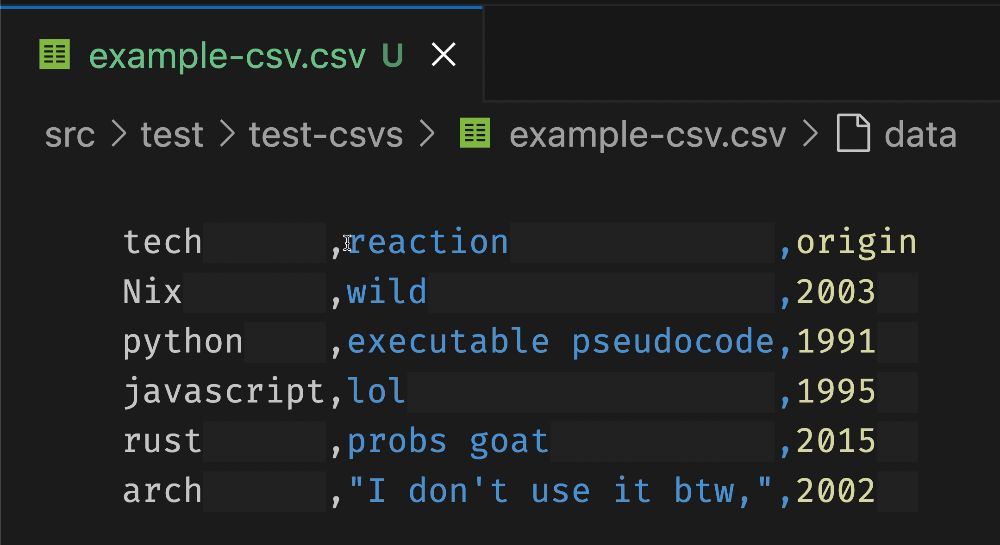

csv-aligner
A VSCode extension that uses the inlay hints to render csvs as columns.
Tip: We recommend that this is used with the rainbow csv extension, which will color the columns.
A CSV like this:
grant,murphy,whaddup,1234,dog
d-train,mochi,hi,1,kitten
Would be rendered like this:
grant ,murphy,whaddup,1234,dog
d-train,mochi ,hi ,1 ,kitten
Features
Deleting Columns

To Do / Known Issues
- The GH Issues
- It doesn't handle separators other than commas
- If the CSV appears to render poorly like shown in this issue, please put the following into your user settings JSON config.
"[csv]": {
"editor.inlayHints.maximumLength": 0
}
Release Notes
0.2.0
- It works for bigger files now
0.1.1
- Added a gif and features section to the readme.
0.1.0
Solved top issue, we think it's working with commas in cell values now.
It doesn't seem to handle different separators very well. That's in progress.
0.0.9
Experimenting with CICD in github.
0.0.8
VSCode was updated and the default inlay hint truncation was removed
0.0.7
Enhanced README
0.0.6
Lol put in an icon.
0.0.5
Learned that VSCode October 2024 release fixes the inlay hint truncation. See VSCode issue 205708.
Contributors
- Big thanks to Noé SELLAM for filing the first issue!!
Support
If you like CSV Aligner, please consider paying it forward by taking a pledge at Giving What We Can or donating to GiveWell.
Or you support the project directly at PayPal 😄